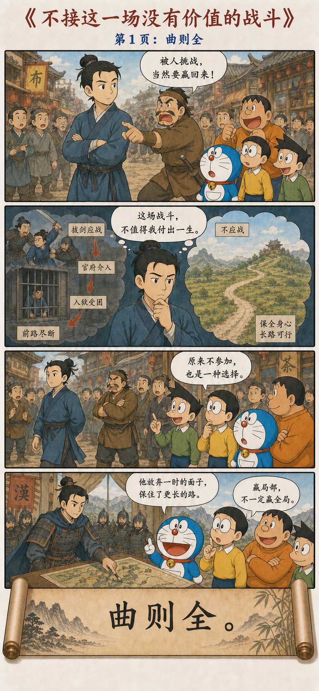
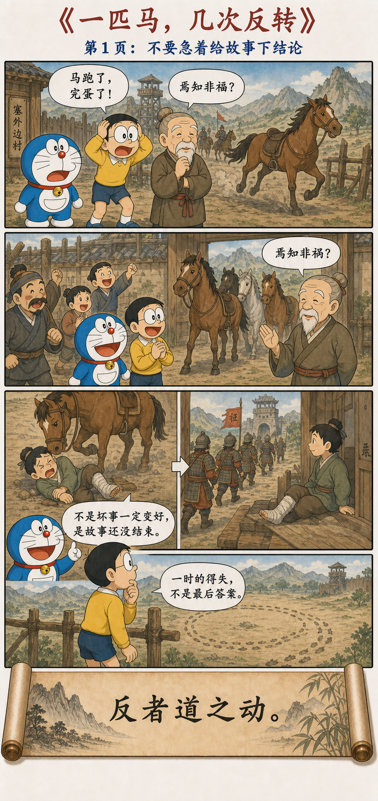
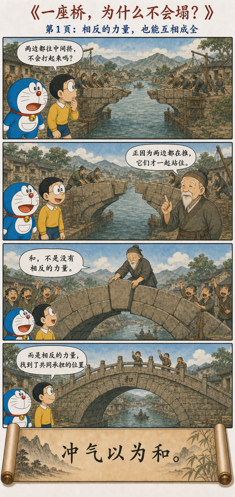
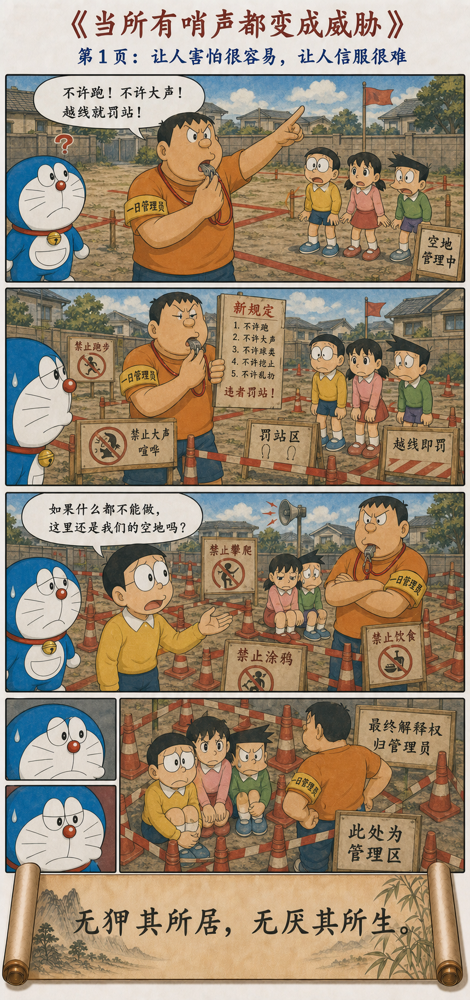

从未来的口袋，回到先秦
从熟悉的奇想出发，慢慢走进老子与庄子的世界。
DORAEMON · LAOZHUANG
一则熟悉的故事，一句古老的话。先看漫画，再循着问题走回老庄。
一把尺子立起来，两端便同时出现。从唯一成功模板，到功成而弗居。
环境怎样制造欲望，欲望又怎样塑造行为？从稀缺、比较与评价体系说起。
水不只柔和，也有深度、信用、治理能力与行动时机。从都江堰、寝丘与种树说起。
谁拿着你的遥控器？从外界评价、狭隘小我，到能够托住更大的责任。
世界一直在变，怎样不被一个瞬间牵着走？从观复与知常，重新找到内在秩序。

不是委屈自己，而是放弃低价值的局部胜负，保护真正重要的长远目标。
聪明、强大、富有、长寿，究竟由谁定义？老子把衡量人生的尺子拿了回来。

世界不是一条只进不退的直线。从塞翁失马、柔弱留力，到一只能够容纳新茶的空杯。

一座拱桥为什么不会塌？从相反力量的共同承担，到损益相生与强梁易折。
看见得更多，真的等于理解得更深吗？从信息过载、内部模型与“不为而成”说起。
Less is more。借庖丁解牛，看知识如何日益，蛮力如何日损。
规则是不是越细越好？失败和成功会不会偷偷互换位置？从控制与分寸说起。
海为什么处在最低？从大者宜为下、万国愿来，到王道与霸道的区别。

当每一声哨子都是威胁，真正的危险来了还有人相信吗？从威吓失效，到自知而不自贵。